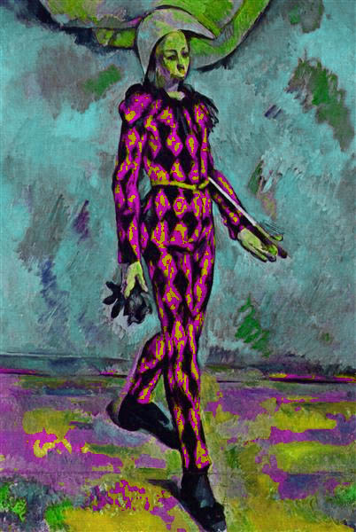
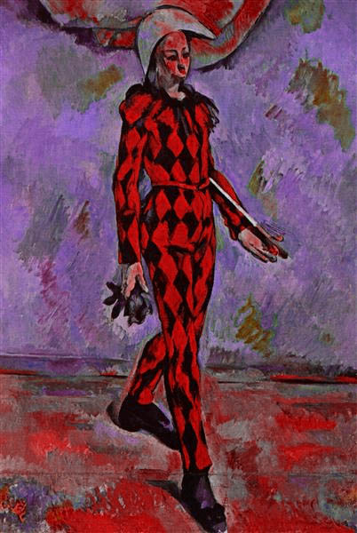

GaHueMa
A Hue Attractor/Repulsor
← Back to AppThe Concept
GaHueMa is a web-based image processing tool designed for hue manipulation. A specific hue is set as an anchor point where other colors are pulled towards (attraction) or pushed away (repulsion).
Original Reference

Transformation Effects


How to Use
- Upload: Drag an image into the workspace. You can keep dragging images into the works
- Sample: Click anywhere on the original image to set your
Anchor Huedirectly from a pixel. - Tweak: Use the "Prevent Crossing" toggle to maintain the logical order of the color wheel.
- Export: Save your result as a PNG.
Transformation Modes
Add
Add shifts each hue relative to the anchor point by a fixed number of degrees. Positive values push hues farther away from the anchor point, while negative values pull hues toward it.
Multiply
Multiply scales the shortest hue distance between a hue and the anchor point. For example, if a hue is 20° clockwise from the anchor point, a factor of 2 moves it 40° clockwise from the anchor point. Values greater than 1 push hues farther away, while fractional values such as 0.5 pull them closer to the anchor point.
Negative values flip the hue across the anchor point. For example, if a hue is 20° clockwise from the anchor point, a factor of -2 moves it 40° counter-clockwise from the anchor point.
Prevent Crossing Anchor Point
By default, crossing the anchor point is prevented. If a transformation would cause a hue to pass through either the anchor point or its opposite point on the hue wheel, the result is clamped to that boundary instead. This keeps hues from wrapping across the anchor axis.
With negative multiplication, this option causes hues to collapse to a boundary, because negative multiplication is designed to flip hues around the anchor point.
Hues collapse and clamp at the anchor.
Hues collapse and clamp at the opposite pole.
Hues attract freely, crossing the anchor axis entirely.
Binomial
Binomial combines multiplication, power, and additive offset into a single transformation:
M · ΔhP + A
Here, Δh is the signed shortest hue distance from the anchor point, M is the multiplier, P is the power, and A is the additive offset. The distance is transformed first by the power and multiplier, then shifted by the offset.
If P = 1, the transformation behaves like a standard add/multiply operation. If M = 1 and A = 0, there is no change.
The power changes how strongly hues respond based on their distance from the anchor point. For example, if a hue is 10° from the anchor point and P = 2, that distance becomes 100° before the multiplier and offset are applied. This makes farther movement much more dramatic. If P < 1, distances are compressed instead, which can pull hues into a tighter band around the anchor point.